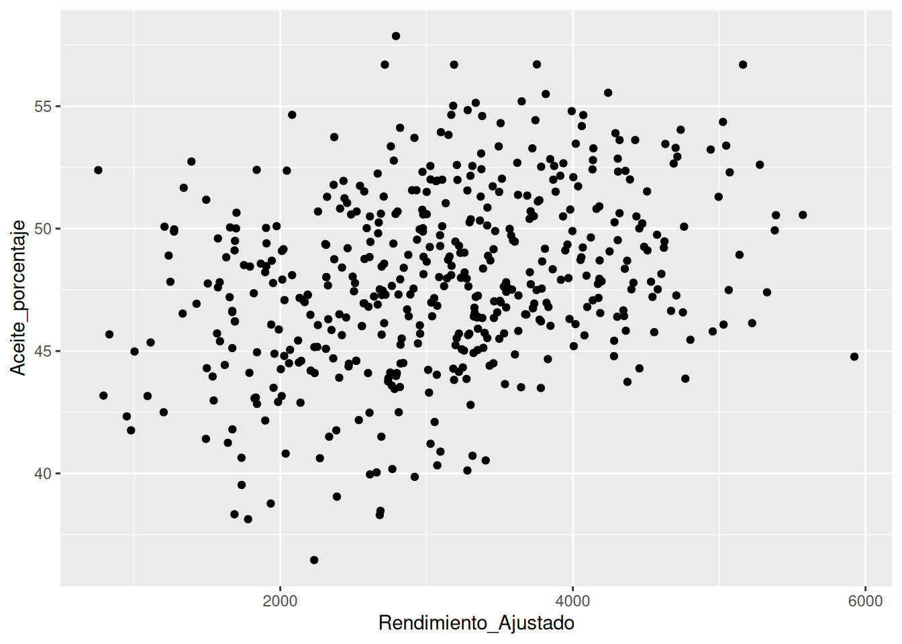
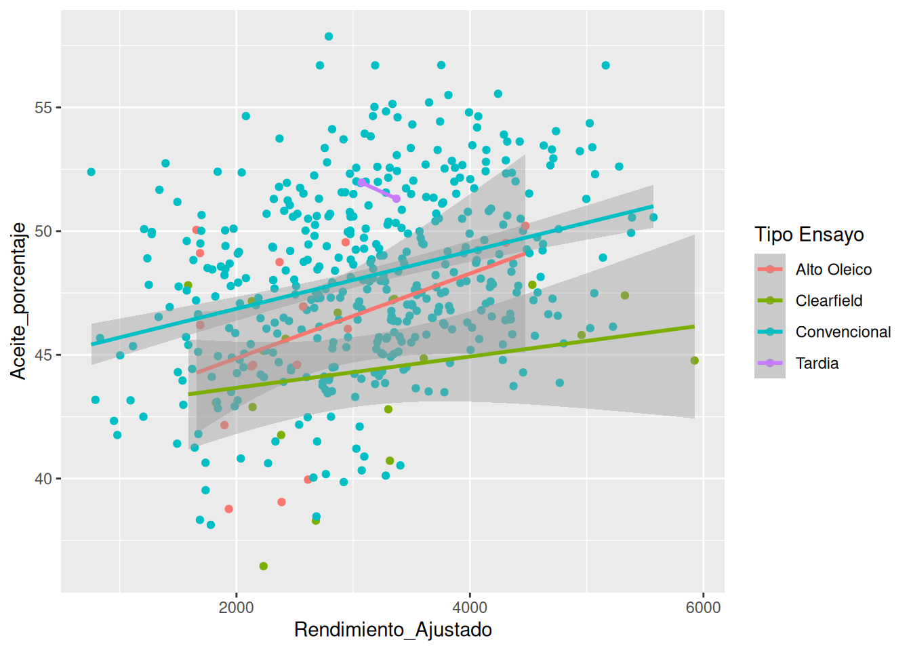
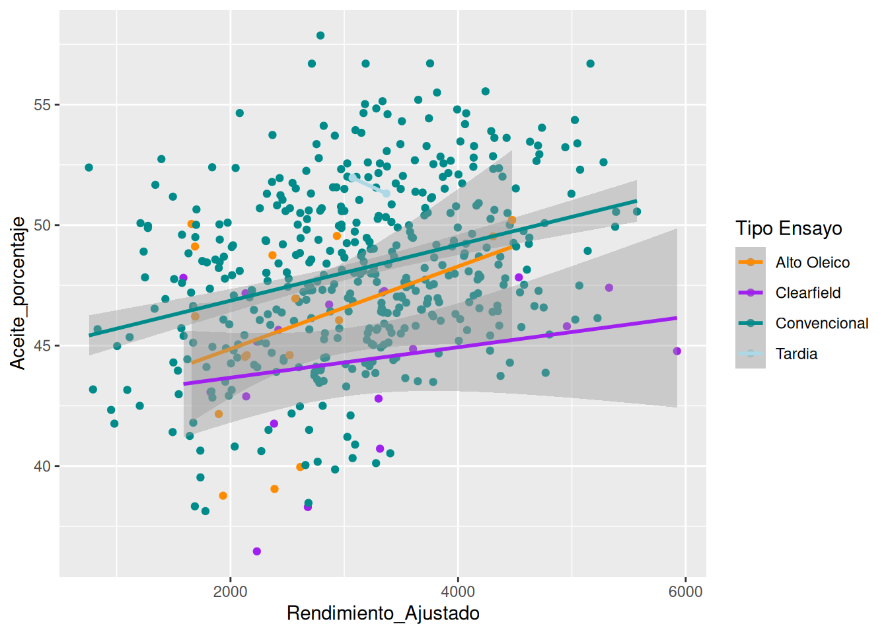

La visualización de datos es útil no sólo para explorar los datos e
identificar la relación entre diferentes variables, sino también para
comunicar el resultado del análisis. El paquete ggplot2
nos permite generar gráficos de alta calidad con unas pocas líneas de
código. Cualquier gráfico de ggplot tendrá al menos 3 componentes: los
datos, un sistema de coordenadas y una
geometría (la representación visual de los datos) y se
construirá por capas.
¡Empecemos a hacer gráficos!
Primera capa: el área del gráfico
La función principal de ggplot2 se llama también
ggplot() (pero sin el 2!), y nos permite iniciar el gráfico
y definir las características globales. El primer argumento de esta
función serán los datos que queremos visualizar, siempre en un
data.frame. En este caso utilizamos cultivares.
El segundo argumento se llama mapping porque es donde
definimos cómo se “mapean” las columnas del data.frame o las variables
de los datos a las propiedades visuales de las geometrías. Este mapeo
está definido por la función aes(). En este caso indicamos
que en el eje x queremos graficar la variable
Rendimiento_Ajustado y en el eje y la variable
Aceite_porcentaje.
Todo esto sólo generará la primera capa: el área del gráfico.
ggplot(data = cultivares, mapping = aes(x = Rendimiento_Ajustado, y = Aceite_porcentaje))
Segunda capa: geometrías
Necesitamos añadir una nueva capa a nuestro gráfico, los elementos
geométricos o “geoms” que representarán los datos. Para ello añadimos
una función geom, por ejemplo si queremos representar los datos con
puntos utilizaremos geom_point(). Para hacer esto
necesitaremos agregar un + al final de la primera capa para
sumar una segunda.
ggplot(data = cultivares, mapping = aes(x = Rendimiento_Ajustado, y = Aceite_porcentaje)) +
geom_point()

Ya tenemos nuestro primer gráfico!
Tal vez observaste que los puntos están agrupados de una manera
particular. Quizá alguna otra variable explique este comportamiento.
Para incluir información de otras variables en nuestro gráfico
podemos aprovechar las características estéticas de las geometrías. En
este caso, podemos “pintar” los puntos según el tipo de ensayo.
ggplot(data = cultivares, mapping = aes(x = Rendimiento_Ajustado, y = Aceite_porcentaje)) +
geom_point(aes(color = `Tipo Ensayo`))

De nuevo, utilizamos la función aes() para asignar una
variable de nuestros datos a un elemento del gráfico. ¡Y tada! ¡Cada
tipo de ensayo tiene características diferentes!
Añadiendo geometrías
Muchas veces no basta con mirar los datos en bruto para identificar
la relación entre las variables; es necesario utilizar alguna
transformación estadística para resaltar esas relaciones, ya sea
ajustando un modelo o calculando alguna estadística.
Para ello, ggplot2 dispone de geoms que calculan transformaciones
estadísticas comunes. Vamos a probar con geom_smoth() para
ajustar un modelo lineal a cada especie.
ggplot(data = cultivares, mapping = aes(x = Rendimiento_Ajustado, y = Aceite_porcentaje)) +
geom_point(aes(color = `Tipo Ensayo`)) +
geom_smooth(aes(color = `Tipo Ensayo`), method = "lm")

Por defecto geom_smooth() ajusta los datos utilizando el
método loess (regresión lineal local) cuando hay menos de 1000 datos
disponibles. Pero es muy común que se quiera ajustar una regresión
lineal global. En ese caso, tenemos que agregar el argumento
method = "lm".
Hablemos del aspecto del gráfico
Por ahora utilizamos el aspecto por defecto de ggplot. Podríamos
cambiar el aspecto del gráfico para adaptarlo al estilo de la
institución donde trabajamos, de la revista donde lo vamos a publicar o
simplemente para darle un estilo propio.
Empecemos por el color. Para cambiar el aspecto estético de un
elemento del gráfico, añadimos una nueva capa con la función
scale_*. En este caso utilizaremos
scale_color_manual() para elegir los colores de los puntos
manualmente. También podríamos utilizar paletas de colores previamente
definidas como las familias Viridis o Color Brewer.
Necesitaremos 4 colores para los cuatro tipos de ensayo, usaremos
"darkorange", "purple" , "cyan4"
y "lightblue".
ggplot(data = cultivares, mapping = aes(x = Rendimiento_Ajustado, y = Aceite_porcentaje)) +
geom_point(aes(color = `Tipo Ensayo`)) +
geom_smooth(aes(color = `Tipo Ensayo`), method = "lm") +
scale_color_manual(values = c("darkorange","purple","cyan4", "lightblue"))

¡Va quedando! Ahora, vamos a añadir algunos elementos de texto con
una nueva capa ggplot: labs().
ggplot(data = cultivares, mapping = aes(x = Rendimiento_Ajustado, y = Aceite_porcentaje)) +
geom_point(aes(color = `Tipo Ensayo`)) +
geom_smooth(aes(color = `Tipo Ensayo`), method = "lm") +
scale_color_manual(values = c("darkorange","purple","cyan4", "lightblue")) +
labs(title = "Rendimiento y procentaje de aceite por tipo de ensayo",
subtitle = "Cultivares ACA de la Red Nacional de Ensayos de Girasol",
x = "Porcentaje de Aceite (%)",
y = "Rendimiento (kg/ha)",
color = "Tipo de Ensayo",
shape = "Tipo de Ensayo")
Ahora las etiquetas de los ejes son más legibles y tenemos un título
y un subtítulo que explican de qué trata el gráfico.
Podríamos seguir cambiando esto infinitamente pero terminaremos con
el aspecto general del gráfico.
El aspecto general de un gráfico está definido por su tema. ggplot2
tiene muchos temas disponibles y para todos los gustos. Pero también hay
otros paquetes que amplían las posibilidades, por ejemplo ggthemes. Por
defecto ggplot2 utiliza theme_grey(), probemos con
theme_minimal():
ggplot(data = cultivares, mapping = aes(x = Rendimiento_Ajustado, y = Aceite_porcentaje)) +
geom_point(aes(color = `Tipo Ensayo`)) +
geom_smooth(aes(color = `Tipo Ensayo`), method = "lm") +
scale_color_manual(values = c("darkorange","purple","cyan4", "lightblue")) +
labs(title = "Rendimiento y procentaje de aceite por tipo de ensayo",
subtitle = "Cultivares ACA de la Red Nacional de Ensayos de Girasol",
x = "Porcentaje de Aceite (%)",
y = "Rendimiento (kg/ha)",
color = "Tipo de Ensayo",
shape = "Tipo de Ensayo") +
theme_minimal()

Ahora es tu turno. Elige un tema que te guste y pruébalo. Además, si
se te ocurre un título mejor, ¡modifícalo!
LS0tCnRpdGxlOiAiVmlzdWFsaXphbmRvIGRhdG9zIgpvdXRwdXQ6IAogIGh0bWxfZG9jdW1lbnQ6CiAgICBjb2RlX2Rvd25sb2FkOiB0cnVlCiAgICB0b2M6IHRydWUKICAgIHRvY19mbG9hdDogZmFsc2UKICAgIGhpZ2hsaWdodDogdGFuZ28KLS0tCgpgYGB7ciBzZXR1cCwgaW5jbHVkZT1GQUxTRX0Ka25pdHI6Om9wdHNfY2h1bmskc2V0KAoJZWNobyA9IFRSVUUsCgltZXNzYWdlID0gRkFMU0UsCgl3YXJuaW5nID0gRkFMU0UKKQpsaWJyYXJ5KHRpZHl2ZXJzZSkKCmN1bHRpdmFyZXMgPC0gcmVhZF9jc3YoImRhdG9zL1JOR19zbWFsbC5jc3YiKQpgYGAKCkxhIHZpc3VhbGl6YWNpw7NuIGRlIGRhdG9zIGVzIMO6dGlsIG5vIHPDs2xvIHBhcmEgZXhwbG9yYXIgbG9zIGRhdG9zIGUgaWRlbnRpZmljYXIgbGEgcmVsYWNpw7NuIGVudHJlIGRpZmVyZW50ZXMgdmFyaWFibGVzLCBzaW5vIHRhbWJpw6luIHBhcmEgY29tdW5pY2FyIGVsIHJlc3VsdGFkbyBkZWwgYW7DoWxpc2lzLiBFbCBwYXF1ZXRlICoqZ2dwbG90MioqIG5vcyBwZXJtaXRlIGdlbmVyYXIgZ3LDoWZpY29zIGRlIGFsdGEgY2FsaWRhZCBjb24gdW5hcyBwb2NhcyBsw61uZWFzIGRlIGPDs2RpZ28uIEN1YWxxdWllciBncsOhZmljbyBkZSBnZ3Bsb3QgdGVuZHLDoSBhbCBtZW5vcyAzIGNvbXBvbmVudGVzOiBsb3MgKipkYXRvcyoqLCB1biAqKnNpc3RlbWEgZGUgY29vcmRlbmFkYXMqKiB5IHVuYSAqKmdlb21ldHLDrWEqKiAobGEgcmVwcmVzZW50YWNpw7NuIHZpc3VhbCBkZSBsb3MgZGF0b3MpIHkgc2UgY29uc3RydWlyw6EgcG9yIGNhcGFzLgoKwqFFbXBlY2Vtb3MgYSBoYWNlciBncsOhZmljb3MhCgojIyBQcmltZXJhIGNhcGE6IGVsIMOhcmVhIGRlbCBncsOhZmljbwoKTGEgZnVuY2nDs24gcHJpbmNpcGFsIGRlIGdncGxvdDIgc2UgbGxhbWEgdGFtYmnDqW4gYGdncGxvdCgpYCAocGVybyBzaW4gZWwgMiEpLCB5IG5vcyBwZXJtaXRlIGluaWNpYXIgZWwgZ3LDoWZpY28geSBkZWZpbmlyIGxhcyBjYXJhY3RlcsOtc3RpY2FzIGdsb2JhbGVzLiBFbCBwcmltZXIgYXJndW1lbnRvIGRlIGVzdGEgZnVuY2nDs24gc2Vyw6FuIGxvcyBkYXRvcyBxdWUgcXVlcmVtb3MgdmlzdWFsaXphciwgc2llbXByZSBlbiB1biBkYXRhLmZyYW1lLiBFbiBlc3RlIGNhc28gdXRpbGl6YW1vcyBgY3VsdGl2YXJlc2AuCgpFbCBzZWd1bmRvIGFyZ3VtZW50byBzZSBsbGFtYSBgbWFwcGluZ2AgcG9ycXVlIGVzIGRvbmRlIGRlZmluaW1vcyBjw7NtbyBzZSAibWFwZWFuIiBsYXMgY29sdW1uYXMgZGVsIGRhdGEuZnJhbWUgbyBsYXMgdmFyaWFibGVzIGRlIGxvcyBkYXRvcyBhIGxhcyBwcm9waWVkYWRlcyB2aXN1YWxlcyBkZSBsYXMgZ2VvbWV0csOtYXMuIEVzdGUgbWFwZW8gZXN0w6EgZGVmaW5pZG8gcG9yIGxhIGZ1bmNpw7NuIGBhZXMoKWAuIEVuIGVzdGUgY2FzbyBpbmRpY2Ftb3MgcXVlIGVuIGVsIGVqZSB4IHF1ZXJlbW9zIGdyYWZpY2FyIGxhIHZhcmlhYmxlIGBSZW5kaW1pZW50b19BanVzdGFkb2AgeSBlbiBlbCBlamUgeSBsYSB2YXJpYWJsZSBgQWNlaXRlX3BvcmNlbnRhamVgLgoKVG9kbyBlc3RvIHPDs2xvIGdlbmVyYXLDoSBsYSBwcmltZXJhIGNhcGE6IGVsIMOhcmVhIGRlbCBncsOhZmljby4KCmBgYHtyfQpnZ3Bsb3QoZGF0YSA9IGN1bHRpdmFyZXMsIG1hcHBpbmcgPSBhZXMoeCA9IFJlbmRpbWllbnRvX0FqdXN0YWRvLCB5ID0gQWNlaXRlX3BvcmNlbnRhamUpKSAKYGBgCgojIyBTZWd1bmRhIGNhcGE6IGdlb21ldHLDrWFzCgpOZWNlc2l0YW1vcyBhw7FhZGlyIHVuYSBudWV2YSBjYXBhIGEgbnVlc3RybyBncsOhZmljbywgbG9zIGVsZW1lbnRvcyBnZW9tw6l0cmljb3MgbyAiZ2VvbXMiIHF1ZSByZXByZXNlbnRhcsOhbiBsb3MgZGF0b3MuIFBhcmEgZWxsbyBhw7FhZGltb3MgdW5hIGZ1bmNpw7NuIGdlb20sIHBvciBlamVtcGxvIHNpIHF1ZXJlbW9zIHJlcHJlc2VudGFyIGxvcyBkYXRvcyBjb24gcHVudG9zIHV0aWxpemFyZW1vcyBgZ2VvbV9wb2ludCgpYC4gUGFyYSBoYWNlciBlc3RvIG5lY2VzaXRhcmVtb3MgYWdyZWdhciB1biBgK2AgYWwgZmluYWwgZGUgbGEgcHJpbWVyYSBjYXBhIHBhcmEgc3VtYXIgdW5hIHNlZ3VuZGEuIAoKYGBge3J9CmdncGxvdChkYXRhID0gY3VsdGl2YXJlcywgbWFwcGluZyA9IGFlcyh4ID0gUmVuZGltaWVudG9fQWp1c3RhZG8sIHkgPSBBY2VpdGVfcG9yY2VudGFqZSkpICArCiAgZ2VvbV9wb2ludCgpCmBgYAoKWWEgdGVuZW1vcyBudWVzdHJvIHByaW1lciBncsOhZmljbyEgCgpUYWwgdmV6IG9ic2VydmFzdGUgcXVlIGxvcyBwdW50b3MgZXN0w6FuIGFncnVwYWRvcyBkZSB1bmEgbWFuZXJhIHBhcnRpY3VsYXIuIFF1aXrDoSBhbGd1bmEgb3RyYSB2YXJpYWJsZSBleHBsaXF1ZSBlc3RlIGNvbXBvcnRhbWllbnRvLiAKClBhcmEgaW5jbHVpciBpbmZvcm1hY2nDs24gZGUgb3RyYXMgdmFyaWFibGVzIGVuIG51ZXN0cm8gZ3LDoWZpY28gcG9kZW1vcyBhcHJvdmVjaGFyIGxhcyBjYXJhY3RlcsOtc3RpY2FzIGVzdMOpdGljYXMgZGUgbGFzIGdlb21ldHLDrWFzLiBFbiBlc3RlIGNhc28sIHBvZGVtb3MgInBpbnRhciIgbG9zIHB1bnRvcyBzZWfDum4gZWwgdGlwbyBkZSBlbnNheW8uIAoKYGBge3J9CmdncGxvdChkYXRhID0gY3VsdGl2YXJlcywgbWFwcGluZyA9IGFlcyh4ID0gUmVuZGltaWVudG9fQWp1c3RhZG8sIHkgPSBBY2VpdGVfcG9yY2VudGFqZSkpICsKICBnZW9tX3BvaW50KGFlcyhjb2xvciA9IGBUaXBvIEVuc2F5b2ApKQpgYGAKCkRlIG51ZXZvLCB1dGlsaXphbW9zIGxhIGZ1bmNpw7NuIGBhZXMoKWAgcGFyYSBhc2lnbmFyIHVuYSB2YXJpYWJsZSBkZSBudWVzdHJvcyBkYXRvcyBhIHVuIGVsZW1lbnRvIGRlbCBncsOhZmljby4gwqFZIHRhZGEhIMKhQ2FkYSB0aXBvIGRlIGVuc2F5byB0aWVuZSBjYXJhY3RlcsOtc3RpY2FzIGRpZmVyZW50ZXMhCgojIyBBw7FhZGllbmRvIGdlb21ldHLDrWFzCgpNdWNoYXMgdmVjZXMgbm8gYmFzdGEgY29uIG1pcmFyIGxvcyBkYXRvcyBlbiBicnV0byBwYXJhIGlkZW50aWZpY2FyIGxhIHJlbGFjacOzbiBlbnRyZSBsYXMgdmFyaWFibGVzOyBlcyBuZWNlc2FyaW8gdXRpbGl6YXIgYWxndW5hIHRyYW5zZm9ybWFjacOzbiBlc3RhZMOtc3RpY2EgcGFyYSByZXNhbHRhciBlc2FzIHJlbGFjaW9uZXMsIHlhIHNlYSBhanVzdGFuZG8gdW4gbW9kZWxvIG8gY2FsY3VsYW5kbyBhbGd1bmEgZXN0YWTDrXN0aWNhLiAKClBhcmEgZWxsbywgZ2dwbG90MiBkaXNwb25lIGRlIGdlb21zIHF1ZSBjYWxjdWxhbiB0cmFuc2Zvcm1hY2lvbmVzIGVzdGFkw61zdGljYXMgY29tdW5lcy4gVmFtb3MgYSBwcm9iYXIgY29uIGBnZW9tX3Ntb3RoKClgIHBhcmEgYWp1c3RhciB1biBtb2RlbG8gbGluZWFsIGEgY2FkYSBlc3BlY2llLiAKCmBgYHtyfQpnZ3Bsb3QoZGF0YSA9IGN1bHRpdmFyZXMsIG1hcHBpbmcgPSBhZXMoeCA9IFJlbmRpbWllbnRvX0FqdXN0YWRvLCB5ID0gQWNlaXRlX3BvcmNlbnRhamUpKSArCiAgZ2VvbV9wb2ludChhZXMoY29sb3IgPSBgVGlwbyBFbnNheW9gKSkgKwogIGdlb21fc21vb3RoKGFlcyhjb2xvciA9IGBUaXBvIEVuc2F5b2ApLCBtZXRob2QgPSAibG0iKQpgYGAKClBvciBkZWZlY3RvIGBnZW9tX3Ntb290aCgpYCBhanVzdGEgbG9zIGRhdG9zIHV0aWxpemFuZG8gZWwgbcOpdG9kbyBsb2VzcyAocmVncmVzacOzbiBsaW5lYWwgbG9jYWwpIGN1YW5kbyBoYXkgbWVub3MgZGUgMTAwMCBkYXRvcyBkaXNwb25pYmxlcy4gUGVybyBlcyBtdXkgY29tw7puIHF1ZSBzZSBxdWllcmEgYWp1c3RhciB1bmEgcmVncmVzacOzbiBsaW5lYWwgZ2xvYmFsLiBFbiBlc2UgY2FzbywgdGVuZW1vcyBxdWUgYWdyZWdhciBlbCBhcmd1bWVudG8gYG1ldGhvZCA9ICJsbSJgLgoKIyMgSGFibGVtb3MgZGVsIGFzcGVjdG8gZGVsIGdyw6FmaWNvICAKICAKUG9yIGFob3JhIHV0aWxpemFtb3MgZWwgYXNwZWN0byBwb3IgZGVmZWN0byBkZSBnZ3Bsb3QuIFBvZHLDrWFtb3MgY2FtYmlhciBlbCBhc3BlY3RvIGRlbCBncsOhZmljbyBwYXJhIGFkYXB0YXJsbyBhbCBlc3RpbG8gZGUgbGEgaW5zdGl0dWNpw7NuIGRvbmRlIHRyYWJhamFtb3MsIGRlIGxhIHJldmlzdGEgZG9uZGUgbG8gdmFtb3MgYSBwdWJsaWNhciBvIHNpbXBsZW1lbnRlIHBhcmEgZGFybGUgdW4gZXN0aWxvIHByb3Bpby4gCiAgCkVtcGVjZW1vcyBwb3IgZWwgY29sb3IuIFBhcmEgY2FtYmlhciBlbCBhc3BlY3RvIGVzdMOpdGljbyBkZSB1biBlbGVtZW50byBkZWwgZ3LDoWZpY28sIGHDsWFkaW1vcyB1bmEgbnVldmEgY2FwYSBjb24gbGEgZnVuY2nDs24gYHNjYWxlXypgLiBFbiBlc3RlIGNhc28gdXRpbGl6YXJlbW9zIGBzY2FsZV9jb2xvcl9tYW51YWwoKWAgcGFyYSBlbGVnaXIgbG9zIGNvbG9yZXMgZGUgbG9zIHB1bnRvcyBtYW51YWxtZW50ZS4gVGFtYmnDqW4gcG9kcsOtYW1vcyB1dGlsaXphciBwYWxldGFzIGRlIGNvbG9yZXMgcHJldmlhbWVudGUgZGVmaW5pZGFzIGNvbW8gbGFzIGZhbWlsaWFzIFZpcmlkaXMgbyBDb2xvciBCcmV3ZXIuIAogIApOZWNlc2l0YXJlbW9zIDQgY29sb3JlcyBwYXJhIGxvcyBjdWF0cm8gdGlwb3MgZGUgZW5zYXlvLCB1c2FyZW1vcyBgImRhcmtvcmFuZ2UiYCwgYCJwdXJwbGUiYCAsIGAiY3lhbjQiYCB5IGAibGlnaHRibHVlImAuCgpgYGB7cn0KZ2dwbG90KGRhdGEgPSBjdWx0aXZhcmVzLCBtYXBwaW5nID0gYWVzKHggPSBSZW5kaW1pZW50b19BanVzdGFkbywgeSA9IEFjZWl0ZV9wb3JjZW50YWplKSkgKwogIGdlb21fcG9pbnQoYWVzKGNvbG9yID0gYFRpcG8gRW5zYXlvYCkpICsKICBnZW9tX3Ntb290aChhZXMoY29sb3IgPSBgVGlwbyBFbnNheW9gKSwgbWV0aG9kID0gImxtIikgKwogIHNjYWxlX2NvbG9yX21hbnVhbCh2YWx1ZXMgPSBjKCJkYXJrb3JhbmdlIiwicHVycGxlIiwiY3lhbjQiLCAibGlnaHRibHVlIikpIApgYGAKCsKhVmEgcXVlZGFuZG8hIEFob3JhLCB2YW1vcyBhIGHDsWFkaXIgYWxndW5vcyBlbGVtZW50b3MgZGUgdGV4dG8gY29uIHVuYSBudWV2YSBjYXBhIGdncGxvdDogYGxhYnMoKWAuCgpgYGB7cn0KZ2dwbG90KGRhdGEgPSBjdWx0aXZhcmVzLCBtYXBwaW5nID0gYWVzKHggPSBSZW5kaW1pZW50b19BanVzdGFkbywgeSA9IEFjZWl0ZV9wb3JjZW50YWplKSkgKwogIGdlb21fcG9pbnQoYWVzKGNvbG9yID0gYFRpcG8gRW5zYXlvYCkpICsKICBnZW9tX3Ntb290aChhZXMoY29sb3IgPSBgVGlwbyBFbnNheW9gKSwgbWV0aG9kID0gImxtIikgKwogIHNjYWxlX2NvbG9yX21hbnVhbCh2YWx1ZXMgPSBjKCJkYXJrb3JhbmdlIiwicHVycGxlIiwiY3lhbjQiLCAibGlnaHRibHVlIikpICArCiAgbGFicyh0aXRsZSA9ICJSZW5kaW1pZW50byB5IHByb2NlbnRhamUgZGUgYWNlaXRlIHBvciB0aXBvIGRlIGVuc2F5byIsCiAgICAgICBzdWJ0aXRsZSA9ICJDdWx0aXZhcmVzIEFDQSBkZSBsYSBSZWQgTmFjaW9uYWwgZGUgRW5zYXlvcyBkZSBHaXJhc29sIiwKICAgICAgIHggPSAiUG9yY2VudGFqZSBkZSBBY2VpdGUgKCUpIiwKICAgICAgIHkgPSAiUmVuZGltaWVudG8gKGtnL2hhKSIsCiAgICAgICBjb2xvciA9ICJUaXBvIGRlIEVuc2F5byIsCiAgICAgICBzaGFwZSA9ICJUaXBvIGRlIEVuc2F5byIpIApgYGAKCkFob3JhIGxhcyBldGlxdWV0YXMgZGUgbG9zIGVqZXMgc29uIG3DoXMgbGVnaWJsZXMgeSB0ZW5lbW9zIHVuIHTDrXR1bG8geSB1biBzdWJ0w610dWxvIHF1ZSBleHBsaWNhbiBkZSBxdcOpIHRyYXRhIGVsIGdyw6FmaWNvLiAKClBvZHLDrWFtb3Mgc2VndWlyIGNhbWJpYW5kbyBlc3RvIGluZmluaXRhbWVudGUgcGVybyB0ZXJtaW5hcmVtb3MgY29uIGVsIGFzcGVjdG8gZ2VuZXJhbCBkZWwgZ3LDoWZpY28uIAoKRWwgYXNwZWN0byBnZW5lcmFsIGRlIHVuIGdyw6FmaWNvIGVzdMOhIGRlZmluaWRvIHBvciBzdSB0ZW1hLiBnZ3Bsb3QyIHRpZW5lIG11Y2hvcyB0ZW1hcyBkaXNwb25pYmxlcyB5IHBhcmEgdG9kb3MgbG9zIGd1c3Rvcy4gUGVybyB0YW1iacOpbiBoYXkgb3Ryb3MgcGFxdWV0ZXMgcXVlIGFtcGzDrWFuIGxhcyBwb3NpYmlsaWRhZGVzLCBwb3IgZWplbXBsbyBnZ3RoZW1lcy4gUG9yIGRlZmVjdG8gZ2dwbG90MiB1dGlsaXphIGB0aGVtZV9ncmV5KClgLCBwcm9iZW1vcyBjb24gYHRoZW1lX21pbmltYWwoKWA6CgpgYGB7cn0KZ2dwbG90KGRhdGEgPSBjdWx0aXZhcmVzLCBtYXBwaW5nID0gYWVzKHggPSBSZW5kaW1pZW50b19BanVzdGFkbywgeSA9IEFjZWl0ZV9wb3JjZW50YWplKSkgKwogIGdlb21fcG9pbnQoYWVzKGNvbG9yID0gYFRpcG8gRW5zYXlvYCkpICsKICBnZW9tX3Ntb290aChhZXMoY29sb3IgPSBgVGlwbyBFbnNheW9gKSwgbWV0aG9kID0gImxtIikgKwogIHNjYWxlX2NvbG9yX21hbnVhbCh2YWx1ZXMgPSBjKCJkYXJrb3JhbmdlIiwicHVycGxlIiwiY3lhbjQiLCAibGlnaHRibHVlIikpICArCiAgbGFicyh0aXRsZSA9ICJSZW5kaW1pZW50byB5IHByb2NlbnRhamUgZGUgYWNlaXRlIHBvciB0aXBvIGRlIGVuc2F5byIsCiAgICAgICBzdWJ0aXRsZSA9ICJDdWx0aXZhcmVzIEFDQSBkZSBsYSBSZWQgTmFjaW9uYWwgZGUgRW5zYXlvcyBkZSBHaXJhc29sIiwKICAgICAgIHggPSAiUG9yY2VudGFqZSBkZSBBY2VpdGUgKCUpIiwKICAgICAgIHkgPSAiUmVuZGltaWVudG8gKGtnL2hhKSIsCiAgICAgICBjb2xvciA9ICJUaXBvIGRlIEVuc2F5byIsCiAgICAgICBzaGFwZSA9ICJUaXBvIGRlIEVuc2F5byIpICsKICB0aGVtZV9taW5pbWFsKCkKYGBgCgo+IEFob3JhIGVzIHR1IHR1cm5vLiBFbGlnZSB1biB0ZW1hIHF1ZSB0ZSBndXN0ZSB5IHBydcOpYmFsby4gQWRlbcOhcywgc2kgc2UgdGUgb2N1cnJlIHVuIHTDrXR1bG8gbWVqb3IsIMKhbW9kaWbDrWNhbG8hCg==